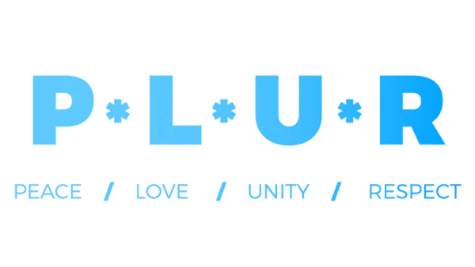

What P.L.U.R. stands for

It is a philosophy that promotes positive values and behaviors within the rave. P.L.U.R. is a very important part of the rave culture that ravers have kept alive by spreading the message of love, unity, and respect to others. It is a reminder to treat others with kindness and respect, and to create a safe and inclusive environment for everyone to enjoy the music and the experience. P.L.U.R. is a lifestyle ravers live by and is often expressed through the use of kandi bracelets, which are handmade beaded bracelets that are exchanged as a symbol of friendship and unity among ravers.